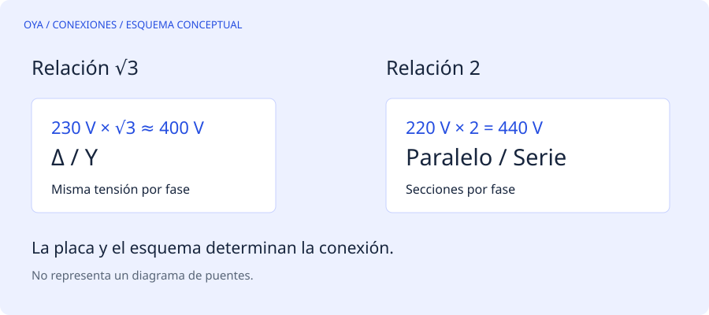

La relación entre las dos cifras importa
Una placa con dos tensiones no permite escoger puentes por parecido visual. En un motor con seis extremos accesibles, la inscripción 230/400 V Δ/Y suele indicar que cada fase del devanado admite unos 230 V. En triángulo, recibe directamente la tensión entre líneas; en estrella, recibe esa tensión dividida entre √3. Por eso 400/√3 ≈ 231 V.
En cambio, una placa 220/440 V expresa una relación 2:1. Habitualmente hay dos secciones por fase que se ponen en paralelo para la tensión baja y en serie para la alta. No se consigue esa relación cambiando únicamente de triángulo a estrella. El esquema del fabricante, y no el número de bornes aislado, decide la conexión.
Un ejemplo que evita una avería
Supongamos un motor identificado como 230/400 V Δ/Y y una red trifásica de 400 V entre líneas. Su conexión de servicio es estrella: cada fase recibe aproximadamente 231 V. Si se conecta en triángulo, cada fase recibiría 400 V, muy por encima de su tensión prevista. El aumento de flujo y corriente puede dañar rápidamente el devanado.
Ahora consideremos un motor 400/690 V Δ/Y en esa misma red de 400 V. Su conexión de servicio es triángulo. Aunque ambos motores tengan seis bornes y aspecto similar, los puentes de funcionamiento son diferentes.
| Placa, con Δ/Y indicado | Red entre líneas | Conexión de servicio |
|---|---|---|
| 230/400 V | 230 V | Triángulo |
| 230/400 V | 400 V | Estrella |
| 400/690 V | 400 V | Triángulo |
| 400/690 V | 690 V | Estrella |
La tabla presupone frecuencia compatible, identificación correcta y autorización del fabricante. No corresponde a motores de dos velocidades ni a todos los motores de nueve o doce puntas.
Por qué no basta con medir continuidad
Un ohmímetro permite localizar pares o grupos conectados, pero no prueba por sí solo su polaridad relativa. Una unión incorrecta puede dejar grupos opuestos magnéticamente aunque todas las resistencias parezcan razonables. Tampoco reconstruye el diseño original de un motor cuyo bobinado ya fue modificado.
Antes de desmontar, conviene registrar la placa completa, el esquema dentro de la tapa, las etiquetas de los conductores y los puentes existentes. La fotografía documenta el estado recibido; no demuestra que ese estado fuera correcto. Si faltan referencias, el trabajo debe pasar a identificación técnica, no a ensayo por conexión directa.
Qué significa para el rebobinado
Una calculadora de cambio de espiras presupone que se mantiene la misma conexión, frecuencia y estructura del circuito, salvo los cambios introducidos expresamente. Si además se cambia de estrella a triángulo, la tensión de fase también cambia. Introducir solamente la tensión de línea puede producir un resultado engañoso.
La primera decisión, por tanto, es comprobar si basta una reconexión prevista en la placa. Rebobinar para obtener una tensión que ya admite el motor puede añadir coste sin resolver ningún problema. Todas las verificaciones de bornes deben hacerse con aislamiento de la alimentación y comprobación de ausencia de tensión por personal cualificado.
Fuentes y alcance
Referencia de consulta: ABB: cómo interpretar una placa NEMA. Los ejemplos numéricos son educativos y no describen un trabajo realizado.